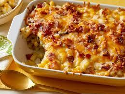

Hash Brown Cassrole
Hash browns, also spelled hashed browns, are a popular
American breakfast dish consisting of pan-fried shredded,
diced, julienned or riced potatoes; some recipes add diced or
chopped onions. Hash browns first started appearing on breakfast menus in New York City in the 1890s.
Omelet

DescriptionIn cuisine, an omelette or omelet is
a dish made from beaten eggs, fried with butter or oil in
a frying pan. It is quite common for the omelette to be folded around fillings
such as cheese, chives, vegetables, mushrooms, meat, or some combination of the above.
Chessy Bacon Ranch Potatoes
A casserole is a large, deep pan used for oven cooking,
and the category of foods cooked in it. The same pan
is often used both for cooking and serving. Unlike braised dishes,
casseroles are baked uncovered. The cookware itself can be called a "casserole dish" or "casserole pan".